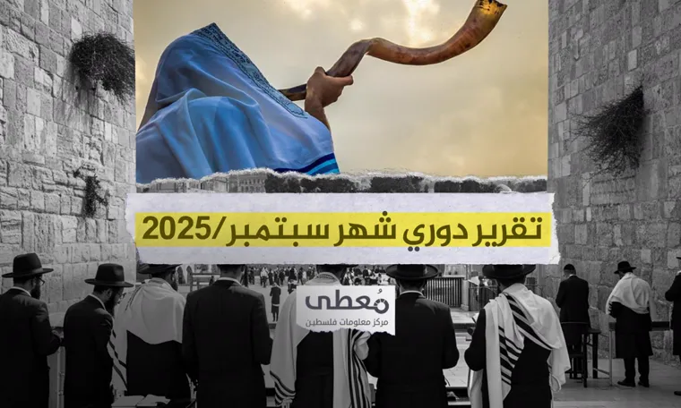

بيانات موثّقة
مصادر موثوقة
تحليل دقيق
لوحة الإحصائيات والمؤشّرات الفلسطينية
نوثّق ونحلّل وننشر إحصاءات وخرائط وتقارير موثوقة عن الواقع في فلسطين، لنقدّم صورة دقيقة تساعد في الفهم وصنع القرار.
النطاق الزمني
102 شهر
منذ يناير 2018
الضفة الغربية
—
من الأحداث المرصودة
القدس
—
من الأحداث المرصودة
قطاع غزة
—
من الأحداث المرصودة
مستوى الأحداث
منخفضمرتفع
مؤشّرات موثّقة · إجمالي تراكمي منذ يناير 2018
تخصيص العرض
مؤشرات الأداء الرئيسية
على مدى 3,096 يوماً (102 شهراً) · بمتوسط 140.3 حدثاً يومياً
الخريطة الديموغرافية لفلسطين
انقر على أي محافظة لتقريبها وعرض تفاصيلها · بدّل المقياس لتغيير تلوين المحافظات حسب الكثافة
ترتيب المحافظات حسب المقياس
كثافة المقياس
أقل
أكثر
الضفة الغربية
قطاع غزة
الاتجاه الشهري للأحداث
102 شهراً من البيانات · الخطّان المتقطّعان: ذروة مايو 2021 وأكتوبر 2023
حصاد المقاومة والانتهاكات
تحليل شامل ومقارن للأحداث الميدانية — 434,505 حدثاً عبر 3,096 يوماً
سجل العمليات حسب الفئة
اختر الفئة لعرض تفاصيل العمليات ضمنها
أكثر المحافظات نشاطاً
أعلى 5 محافظات بحسب إجمالي الأحداث
تحليلات إحصائية
ثلاث زوايا للنظر إلى توزيع الأحداث
نسب الفئات من الإجمالي
انتهاكات الاحتلال 85.3٪
مقاومة شعبية 12.8٪
مقاومة نوعية 1.9٪
تفصيل أنواع انتهاكات الاحتلال
الضحايا والإصابات
تحليل مقارن للضحايا الفلسطينيين والإسرائيليين — 40,950 ضحية إجمالاً خلال الفترة
ضحايا فلسطينيون
38,357
1,581 شهيداً · 36,776 جريحاً
ضحايا إسرائيليون
2,593
154 قتيلاً · 2,439 جريحاً
مقارنة مرئية للضحايا
خريطة حرارية: المحافظات عبر الزمن
نمط نشاط أكثر 11 محافظة عبر الزمن — كثافة اللون تمثّل المستوى النسبي للأحداث (تمثيل توضيحي)
نمط أيام الأسبوع والذروة الزمنية
أيّ أيام الأسبوع تحمل أكثر الأحداث
طول الشعاع = نشاط اليوم · الحلقة المنقّطة = المتوسط اليومي
أكثر الأيام نشاطاً
الثلاثاء
40,273 حدثاً · أعلى من المتوسط بـ11٪
أقلّ الأيام نشاطاً
السبت
31,136 حدثاً · أدنى من المتوسط بـ14٪
الذروة التاريخية
14 مايو 2021
556 حدثاً موثّقاً في يوم واحد
أعلى 10 محافظات
بحسب إجمالي الأحداث الموثّقة عبر كامل الفترة
مقارنة بفترة تاريخية
حصّة الأحداث الموثّقة منذ «طوفان الأقصى» مقارنةً بكامل الفترة قبله
0٪
من إجمالي الأحداث الموثّقة وقعت خلال أقل من 16٪ من المدّة الزمنية — منذ 7 أكتوبر 2023.
قبل طوفان الأقصى (2018 — 2023)0

تقرير دوري · 2 أكتوبر 2025
16 شهيداً و248 جريحاً في 7,514 انتهاكاً إسرائيلياً في الضفة والقدس خلال سبتمبر 2025
رصد مركز معلومات فلسطين «معطى» استمرار قوات الاحتلال الإسرائيلي والمستوطنين في ارتكاب سلسلة واسعة من الانتهاكات بحق الفلسطينيين وممتلكاتهم خلال الشهر.
اقرأ التقرير كاملاً
مرئيات من الميدان
لقطات ورواية مصوّرة موثّقة — انقر لعرض الصورة
الرواية المصوّرة
+50
مصدر موثوق
90٪
نسبة التغطية
12
محافظة مرصودة
23 يونيو 2026
آخر تحديث
منهجية التوثيق